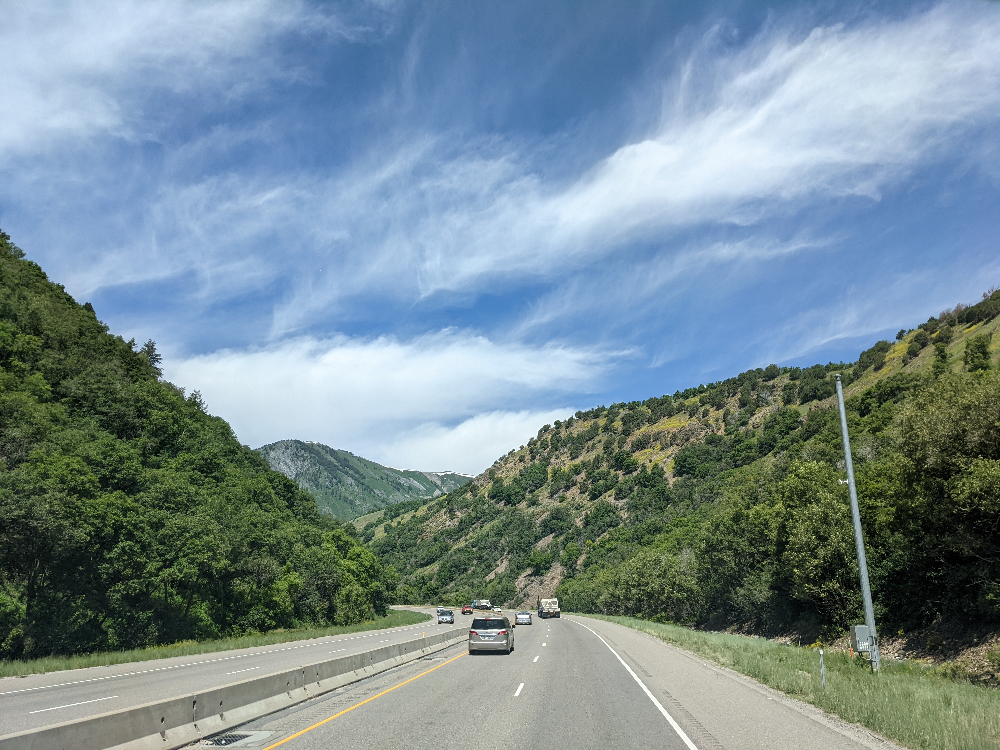

SEPTEMBER 23, 2024
My starting point as a frontend student
Learning is a journey that requires dedication and self-discipline. To stay committed, it's essential to set clear goals and define what I want to learn or achieve. I break my learning process into smaller, manageable steps, and follow a routine that fits my lifestyle.
I stay motivated by finding my passion in a constant grow
I seek out resources, such as blogs, courses, or mentors, that inspire and challenge me. Embracing failure is an opportunity to learn and grow, and I never stop asking questions. It really helps to surround yourself with a community of like-minded learners who can support and encourage me on my education.
I started very slowly, doing very small steps but continuously.🚶🏽♂️
Maintaining a growth mindset and nurturing my thrive on challenge, I'll be better equipped to stay committed to my lifelong learning journey. Procrastination and overthinking can be stumbling blocks, but overcoming these obstacles by simply starting, taking the first step, and then consistently putting in the work is the obvious method to achive some results☝️.
Recent posts

AUGUST 26, 2024
How to Recharge and Reignite Your Creativity
Sometimes, stepping away from your current tasks or projects can provide fresh perspective and ideas. Go for a walk, practice mindfulness, or engage in a different activity to clear your mind.🏃🏻♀️

JULY 04, 2024
Find inspiration outside my working place
Independence day. It inspires us to pursue our own dreams and aspirations with unwavering dedication, knowing that the pursuit of independence and self-determination is a timeless and universal pursuit.

JUNE 14, 2024
A Day of Learning and Experimentation
One day I can't understand new material, it can make me so frustrated for the whole day. Today option for me was to find a video about this lesson's study case and practice it along with the instructor. Finally I can grasp the material, that is making me so proud🦚.